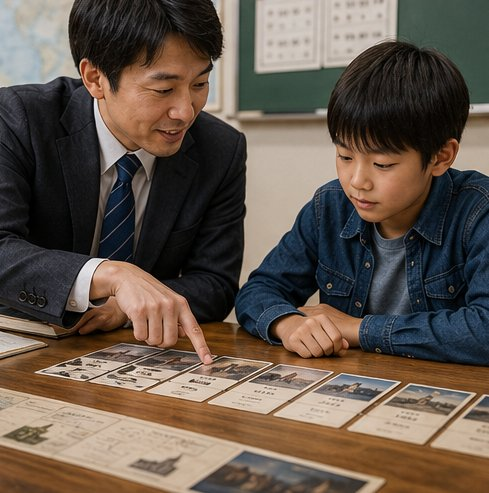
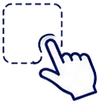

歴史上の出来事を正しい年代順に並べるパズルゲーム。年号の丸暗記ではなく「時代の流れ」を体感しながら、自然と歴史が身につきます。5段階の難易度で中学生から大人まで楽しめます。
歴史学習の「つまずき」、タイムラインマスターが解決します
歴史を「楽しく・確実に」学べる仕組み
古代から現代まで幅広く収録。日本史・世界史を選んで、それぞれ15セット以上の問題に挑戦できます。
超初級（3問）〜エキスパート（7問）まで。自分のレベルに合わせて段階的にステップアップできます。

「もし難易度ハードで70%なら何点？」を計算。難易度別の推定スコアを比較しながら学習できます。
正しい年代順と各出来事の背景を表示。間違えた問題こそ記憶に残り、確実に知識が定着します。
難易度別にハイスコアを保存。グラフで成長を可視化し、自己ベスト更新を目指せます。
LINE・Xでスコアをシェア。友だちとハイスコアを競い合って、楽しみながら学習が続きます。
登録不要、ブラウザを開いて1分でスタート
日本史 / 世界史と、5段階の難易度から選択します。

出来事カードを古い順にドラッグ＆ドロップで配置。
「確認する」で正誤と解説をチェックします。
正答率・難易度別ハイスコアをグラフで確認。
実際のゲーム画面とスコア機能をご紹介
📌 古い順に並べてください
世代を問わず、歴史を楽しみたいすべての方へ
定期テスト対策に。年代順を遊びながら覚えられます。
日本史・世界史の流れを整理し、入試の得点力アップに。
教養として歴史を学び直したい方のすきま時間に。
通勤・休憩のスキマ時間に。脳トレ・学び直しに最適。
知識の腕試しに。どこまで正確に覚えているか挑戦！
世代を超えて一緒に楽しめる教育ゲームとして。
「楽しさ」と「流れの理解」を両立できるのが強みです
| 比較項目 | タイムラインマスター | 一般的な暗記アプリ | 教科書・参考書 |
|---|---|---|---|
| 楽しく続けられる | ◎ | ○ | △ |
| 時代の流れの理解 | ◎ | △ | ○ |
| 完全無料 | ○ | × | × |
| インストール不要 | ○ | × | ○ |
| 難易度の調整 | ◎ | ○ | × |
はじめての方が気になるポイントをまとめました
はい、完全無料です。会員登録もアプリのインストールも不要で、ブラウザからすぐに遊べます。スマートフォン・タブレット・PCのすべてに対応しています。
いいえ。正確な年号の暗記は不要です。「戦国時代は江戸時代より前」といった大まかな時代感覚があれば、超初級・初級から十分楽しめます。繰り返すうちに前後関係が自然と身につきます。
はい。ゲーム開始前に日本史または世界史を選択できます。古代から現代まで、それぞれ複数のセットを収録しています。
ハイスコアはお使いのブラウザのローカルストレージに保存されます。同じブラウザを使う限り記録が保持されます。ログインは不要です。
はい。ドラッグ＆ドロップに加えて、カードをタップ→スロットをタップする操作にも対応しているため、スマホでも快適に遊べます。